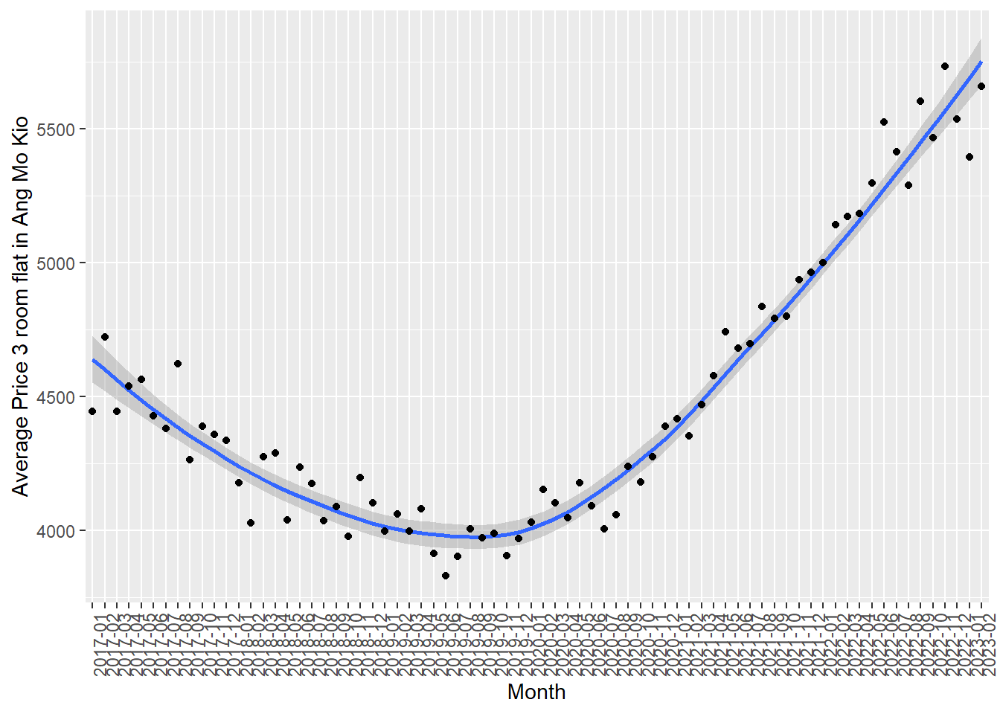
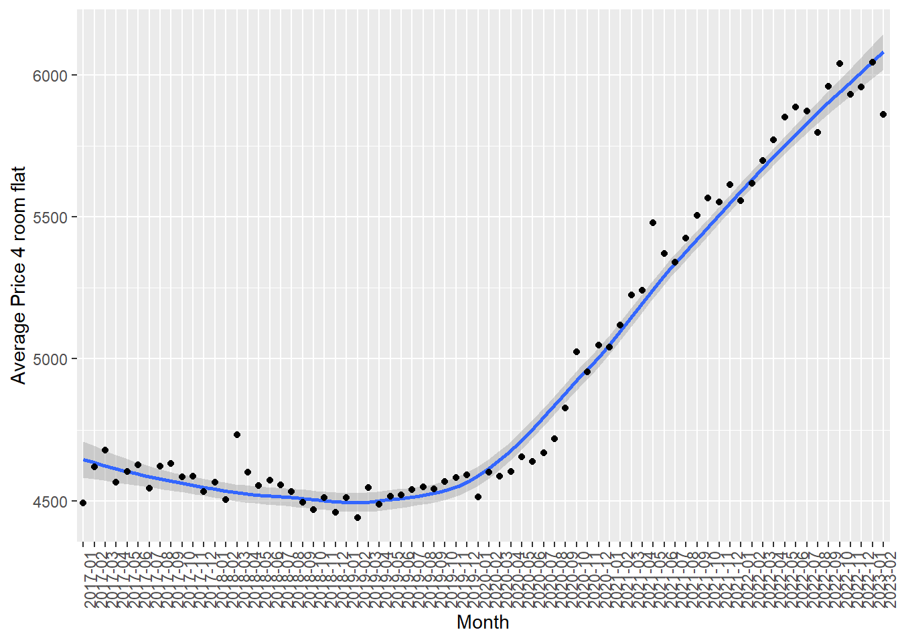

pacman::p_load(readxl)
pacman::p_load(readr)
pacman::p_load(ggstatsplot)
pacman::p_load(tidyverse)TakehomeEx03
The Task
In this take-home exercise, we will study the patterns of the resale prices of public housing property by residential towns and estates in Singapore by using appropriate analytical visualisation techniques learned in Lesson 4: Fundamentals of Visual Analytics.
For the purpose of this study, the focus should be on 3-ROOM, 4-ROOM and 5-ROOM types.
The Data
The data is the transactions data of HDB units in Singapore, spanning across different areas in Singapore. It includes many different types of data, such as types of flats, the address, remaining amount of leases and the resale prices for these units etc….
It can be downloaded from Data.gov.sg for Resale Flat Prices based on registration date between Jan 2017 onwards
https://data.gov.sg/dataset/resale-flat-prices
overall_data <- read_csv("data3/resale-flat-prices-based-on-registration-date-from-jan-2017-onwards.csv")Rows: 146215 Columns: 11
── Column specification ────────────────────────────────────────────────────────
Delimiter: ","
chr (8): month, town, flat_type, block, street_name, storey_range, flat_mode...
dbl (2): floor_area_sqm, lease_commence_date
num (1): resale_price
ℹ Use `spec()` to retrieve the full column specification for this data.
ℹ Specify the column types or set `show_col_types = FALSE` to quiet this message.tail(overall_data)# A tibble: 6 × 11
month town flat_type block stree…¹ store…² floor…³ flat_…⁴ lease…⁵ remai…⁶
<chr> <chr> <chr> <chr> <chr> <chr> <dbl> <chr> <dbl> <chr>
1 2023-02 YISHUN 4 ROOM 720 YISHUN… 01 TO … 84 Simpli… 1985 61 yea…
2 2023-02 YISHUN 4 ROOM 867 YISHUN… 04 TO … 84 Simpli… 1988 64 yea…
3 2023-02 YISHUN 5 ROOM 347A YISHUN… 13 TO … 112 DBSS 2013 89 yea…
4 2023-02 YISHUN 5 ROOM 785 YISHUN… 10 TO … 121 Improv… 1988 64 yea…
5 2023-02 YISHUN 5 ROOM 336C YISHUN… 07 TO … 112 Improv… 2015 91 yea…
6 2023-02 YISHUN 5 ROOM 513D YISHUN… 07 TO … 120 3Gen 2018 94 yea…
# … with 1 more variable: resale_price <dbl>, and abbreviated variable names
# ¹street_name, ²storey_range, ³floor_area_sqm, ⁴flat_model,
# ⁵lease_commence_date, ⁶remaining_leaseTime Series Data Analysis
There is an unanimous agreement among Singaporeans that housing prices, including HDB prices, are ever increasing due to constraint limits of land areas in Singapore. Resale prices of HDB, then, would also follow the same notion.
Let us examine the data to see if the above statement is true.
Let us start with 3 Room dataset for entire Singapore
three_roomdf = overall_data[overall_data$`flat_type` == '3 ROOM',]
tail(three_roomdf)# A tibble: 6 × 11
month town flat_type block stree…¹ store…² floor…³ flat_…⁴ lease…⁵ remai…⁶
<chr> <chr> <chr> <chr> <chr> <chr> <dbl> <chr> <dbl> <chr>
1 2023-02 YISHUN 3 ROOM 431B YISHUN… 10 TO … 67 Model A 2015 91 yea…
2 2023-02 YISHUN 3 ROOM 108 YISHUN… 07 TO … 68 Improv… 1985 61 yea…
3 2023-02 YISHUN 3 ROOM 116 YISHUN… 04 TO … 77 Model A 1983 59 yea…
4 2023-02 YISHUN 3 ROOM 118 YISHUN… 04 TO … 74 Model A 1983 59 yea…
5 2023-02 YISHUN 3 ROOM 234 YISHUN… 04 TO … 67 New Ge… 1985 61 yea…
6 2023-02 YISHUN 3 ROOM 632 YISHUN… 04 TO … 64 Simpli… 1987 63 yea…
# … with 1 more variable: resale_price <dbl>, and abbreviated variable names
# ¹street_name, ²storey_range, ³floor_area_sqm, ⁴flat_model,
# ⁵lease_commence_date, ⁶remaining_leaseEach of these units have different floor area, hence we cannot just compare the absolute values of the resale prices. We need to calculate by the average prices for square meter for each of these units.
three_roomdf$price_per_sqm = three_roomdf$`resale_price` / three_roomdf$floor_area_sqm
tail(three_roomdf)# A tibble: 6 × 12
month town flat_type block stree…¹ store…² floor…³ flat_…⁴ lease…⁵ remai…⁶
<chr> <chr> <chr> <chr> <chr> <chr> <dbl> <chr> <dbl> <chr>
1 2023-02 YISHUN 3 ROOM 431B YISHUN… 10 TO … 67 Model A 2015 91 yea…
2 2023-02 YISHUN 3 ROOM 108 YISHUN… 07 TO … 68 Improv… 1985 61 yea…
3 2023-02 YISHUN 3 ROOM 116 YISHUN… 04 TO … 77 Model A 1983 59 yea…
4 2023-02 YISHUN 3 ROOM 118 YISHUN… 04 TO … 74 Model A 1983 59 yea…
5 2023-02 YISHUN 3 ROOM 234 YISHUN… 04 TO … 67 New Ge… 1985 61 yea…
6 2023-02 YISHUN 3 ROOM 632 YISHUN… 04 TO … 64 Simpli… 1987 63 yea…
# … with 2 more variables: resale_price <dbl>, price_per_sqm <dbl>, and
# abbreviated variable names ¹street_name, ²storey_range, ³floor_area_sqm,
# ⁴flat_model, ⁵lease_commence_date, ⁶remaining_leaseNext, let’s create a dataset for 1 area ANG MO KIO as an example
three_roomdf_amk = three_roomdf[three_roomdf$`town` == "ANG MO KIO",]
tail(three_roomdf_amk)# A tibble: 6 × 12
month town flat_…¹ block stree…² store…³ floor…⁴ flat_…⁵ lease…⁶ remai…⁷
<chr> <chr> <chr> <chr> <chr> <chr> <dbl> <chr> <dbl> <chr>
1 2023-02 ANG MO … 3 ROOM 541 ANG MO… 07 TO … 68 New Ge… 1981 57 yea…
2 2023-02 ANG MO … 3 ROOM 561 ANG MO… 10 TO … 68 New Ge… 1980 56 yea…
3 2023-02 ANG MO … 3 ROOM 126 ANG MO… 10 TO … 82 New Ge… 1978 54 yea…
4 2023-02 ANG MO … 3 ROOM 313 ANG MO… 01 TO … 73 New Ge… 1978 54 yea…
5 2023-02 ANG MO … 3 ROOM 624 ANG MO… 10 TO … 68 New Ge… 1980 56 yea…
6 2023-02 ANG MO … 3 ROOM 523 ANG MO… 04 TO … 68 New Ge… 1980 56 yea…
# … with 2 more variables: resale_price <dbl>, price_per_sqm <dbl>, and
# abbreviated variable names ¹flat_type, ²street_name, ³storey_range,
# ⁴floor_area_sqm, ⁵flat_model, ⁶lease_commence_date, ⁷remaining_leaseNow we have a time series dataset about the average price per square meter for 3 rooms unit in Ang Mo Kio area, from 2017 to 2023.
The following chunk of code will visualize this time series dataset, to see how much did the average prices of 3 rooms unit HDB in ANG MO KIO have changed in the last 7 years.
three_roomdf_amk1 = three_roomdf_amk[c("month" , "price_per_sqm" )]
amk_monthly_avg = three_roomdf_amk1 %>%
group_by(month) %>%
summarise(average_price_sqm = mean(price_per_sqm))p = ggplot(amk_monthly_avg, aes(x= amk_monthly_avg$month, y=amk_monthly_avg$average_price_sqm , group = 1)) +
geom_smooth() + geom_point()+
theme(axis.text.x=element_text(angle=90, hjust=1))+
xlab("Month")+ylab("Average Price 3 room flat in Ang Mo Kio")
pWarning: Use of `amk_monthly_avg$month` is discouraged.
ℹ Use `month` instead.Warning: Use of `amk_monthly_avg$average_price_sqm` is discouraged.
ℹ Use `average_price_sqm` instead.Warning: Use of `amk_monthly_avg$month` is discouraged.
ℹ Use `month` instead.Warning: Use of `amk_monthly_avg$average_price_sqm` is discouraged.
ℹ Use `average_price_sqm` instead.`geom_smooth()` using method = 'loess' and formula = 'y ~ x'
As you can see, the average resale price for 3 rooms HDB units do not always increase. From 2017, the average was around $4500 per square meter, it actually decrease up to 2019 before it started to increase again.
Let’s see if the average resales prices for 4 rooms units and 5-rooms units display similar trends.
four_roomdf = overall_data[overall_data$`flat_type` == '4 ROOM',]
five_roomdf = overall_data[overall_data$`flat_type` == '5 ROOM',]four_roomdf$price_per_sqm = four_roomdf$`resale_price` / four_roomdf$`floor_area_sqm`
five_roomdf$price_per_sqm = five_roomdf$`resale_price` / five_roomdf$`floor_area_sqm`four_roomdf_amk = four_roomdf[four_roomdf$`town` == "ANG MO KIO",]
five_roomdf_amk = five_roomdf[five_roomdf$`town` == "ANG MO KIO",]4-ROOM average resale prices for Ang Mo Kio
four_roomdf_amk1 = four_roomdf_amk[c("month" , "price_per_sqm" )]
amk_monthly_avg2 = four_roomdf_amk1 %>%
group_by(month) %>%
summarise(average_price_sqm2 = mean(price_per_sqm))p1 = ggplot(amk_monthly_avg2, aes(x= amk_monthly_avg2$month, y=amk_monthly_avg2$average_price_sqm2 , group = 1)) +
geom_smooth() + geom_point()+
theme(axis.text.x=element_text(angle=90, hjust=1))+
xlab("Month")+ylab("Average Price 4 room flat in Ang Mo Kio")
p1Warning: Use of `amk_monthly_avg2$month` is discouraged.
ℹ Use `month` instead.Warning: Use of `amk_monthly_avg2$average_price_sqm2` is discouraged.
ℹ Use `average_price_sqm2` instead.Warning: Use of `amk_monthly_avg2$month` is discouraged.
ℹ Use `month` instead.Warning: Use of `amk_monthly_avg2$average_price_sqm2` is discouraged.
ℹ Use `average_price_sqm2` instead.`geom_smooth()` using method = 'loess' and formula = 'y ~ x'5-ROOM average resale prices for Ang Mo Kio
five_roomdf_amk1 = five_roomdf_amk[c("month" , "price_per_sqm" )]
amk_monthly_avg3 = five_roomdf_amk1 %>%
group_by(month) %>%
summarise(average_price_sqm2 = mean(price_per_sqm))p2 = ggplot(amk_monthly_avg3, aes(x= amk_monthly_avg3$month, y=amk_monthly_avg3$average_price_sqm2 , group = 1)) +
geom_smooth() + geom_point()+
theme(axis.text.x=element_text(angle=90, hjust=1))+
xlab("Month")+ylab("Average Price 5 room flat in Ang Mo Kio")
p2Warning: Use of `amk_monthly_avg3$month` is discouraged.
ℹ Use `month` instead.Warning: Use of `amk_monthly_avg3$average_price_sqm2` is discouraged.
ℹ Use `average_price_sqm2` instead.Warning: Use of `amk_monthly_avg3$month` is discouraged.
ℹ Use `month` instead.Warning: Use of `amk_monthly_avg3$average_price_sqm2` is discouraged.
ℹ Use `average_price_sqm2` instead.`geom_smooth()` using method = 'loess' and formula = 'y ~ x'
As you can see, in Ang Mo Kio, 4 rooms and 5 room types of flats have similar trends, from 2017, it was on the downtrend up til 2019 before started picking up and increased until current year 2023.
The difference are, for 4 room and 5 rooms units, there are some months where there are huge outliers, and the standard deviation away from the trend-line are much bigger compared to 3-Room type of flats. This means for 4 rooms and 5 room types of flats, there are certain transactions that are priced at much higher prices compared to the group’s monthly average.
Sample mean test:
Let’s pull out data for 3 types of flats, 3 ROOM / 4 ROOM and 5 ROOM
df_345 <- subset(overall_data, flat_type %in% c("3 ROOM", "4 ROOM", "5 ROOM"))df_345$price_per_sqm = df_345$`resale_price` / df_345$floor_area_sqm
tail(df_345)# A tibble: 6 × 12
month town flat_type block stree…¹ store…² floor…³ flat_…⁴ lease…⁵ remai…⁶
<chr> <chr> <chr> <chr> <chr> <chr> <dbl> <chr> <dbl> <chr>
1 2023-02 YISHUN 4 ROOM 720 YISHUN… 01 TO … 84 Simpli… 1985 61 yea…
2 2023-02 YISHUN 4 ROOM 867 YISHUN… 04 TO … 84 Simpli… 1988 64 yea…
3 2023-02 YISHUN 5 ROOM 347A YISHUN… 13 TO … 112 DBSS 2013 89 yea…
4 2023-02 YISHUN 5 ROOM 785 YISHUN… 10 TO … 121 Improv… 1988 64 yea…
5 2023-02 YISHUN 5 ROOM 336C YISHUN… 07 TO … 112 Improv… 2015 91 yea…
6 2023-02 YISHUN 5 ROOM 513D YISHUN… 07 TO … 120 3Gen 2018 94 yea…
# … with 2 more variables: resale_price <dbl>, price_per_sqm <dbl>, and
# abbreviated variable names ¹street_name, ²storey_range, ³floor_area_sqm,
# ⁴flat_model, ⁵lease_commence_date, ⁶remaining_leasep2 <- ggbetweenstats(
data = df_345,
x = flat_type,
y = price_per_sqm,
type = "np",
messages = FALSE
)
p2Across Singapore as the country, the mean prices per square meter across 3 types of flats are not that much different from each other. However among 4-Room and 5-Room types of flats, there are more concentrations of transactions on the higher spectrums of price per sqm, above $12,500 / sqm. For 4 room units, there are even transactions that approaching $15,000 /sqm